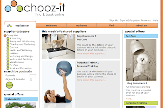

Showcase: Chooz-it (choosing the right technology)

Choozing the right technology
A little under two years ago I set out to build a system that would allow for users to search for service suppliers and allow those suppliers to expose their services, availabilities and take bookings for those availabilities. The system had to be generic enough to encompass as many businesses as possible and needed to be built on very solid foundations as scalability was going to be one of the top requirements. I also wanted to showcase some of the latest ‘bells and whistles’ that the Java/JEE world had to offer. Early in the piece I had been tackling the issue of how to separate the business logic so that it became a nice separate pluggable module leaving the rest of my persistence/service code relatively unpolluted. Drools was then in its early days being just before version 3 was released. I played with it and straight away realised that this had some seriously powerful implications. The use of a logic or rules engine separated logic nicely and the inclusion of domain specific languages made the rules very easy to read and understand. Back then the Eclipse plugin wasn’t yet available so debugging was a pain but not insurmountable. All of the logic became easily unit testable because I separated it totally from the database. This left the cactus tests free to just test that things actually get put in the database. Another relatively new player was EJB3 and JPA. Having gone through the pain of EJB2 but not yet confident enough to use Spring, I opted to give the EJB3 path a go as there was good support already in JBoss AS 4. It had a few initial teething troubles (mainly down to the spec not being finalised) but on the whole it was very stable and easy to use. No config files (hallelujah), just annotate the files and let JBoss do its thing at deploy time. The session facades worked well too. Once I’d ironed out the security domain issues it worked a treat. This gave me the framework to build a high performance service layer. It’s broadly speaking based on SOA because I wanted to allow for the possibility of integration with PC based booking systems. This is for later development but I’d like to allow for the transfer of booking and availability information between the online system and the customers booking system. So a service architecture was a definite must have.
Notifications came into the picture sometime later in development because I needed to have guaranteed email and sms delivery. This came right at the time when JBoss MQ was on the way out and JBoss Messaging was coming in, so naturally I opted to go with the latest and greatest despite the pain that generally comes along with this. The results were not favourable initially as for some reason, the queue JNDI lookups kept failing. Everything looked to be configured correctly as per the doco but it just wouldn’t work. I raised a Jira issue but didn’t get a resolution. It took til version 4.21GA of JBoss AS before I got it working. Somebody fixed something in that version of the code and it all started working like a charm. When the messaging descriptor is configured correctly JBossAS it just picks up on the create SQL and generates the tables if they aren’t already there. I’m confident it will work well because when I first started building the server, the SMTP config was wrong and nothing was happening but as soon I fixed the config all the emails etc just got picked up from the queue and sent out when the app server came back up.
The front end isn’t really that flash. It’s struts tiles utilising a smattering of Ajax. Nothing really new there but we do have a little bit of stuff to interact with the Google Calendar API. I used the sslext tags to handle the changes from HTTP to HTTPS and back again. It generally seems to work well but has got a couple of quirks.
Functionality wise, the system offers suppliers the ability to signup and configure their business details, services and service availabilities. Users can come in and browse for suppliers, look at their service offerings and check for availabilities. Once logged in they can either book a specific availability or make a booking enquiry for a service. Depending on the supplier configuration for the service they can also pay the deposit for the service. The booking can then be managed from both the customer and supplier perspective eg) the status can be confirmed or the customer can request cancellation. Manual bookings taken by phone can also be entered. There is also the facility for employees to be configured and added to teams. Each service can then have a team of service providers or just one provider. Automatic invoicing was built in to trigger on a monthly basis so the supplier can look at their invoice as a .pdf and then pay it online. I used itext to generate the .pdf dynamically when they click on the link. It’s pretty quick but the API is a bit clunky. I also implemented a generic payment gateway interface over the gateway suppliers API that allows me to easily change payment gateway providers if I need to. I could have just used PayPal or something similar but I didn’t like the idea of having the users go outside of the site.
It’s easy to make technology decisions based on how new something is or how great it might sound to say that it’s being used. The proof of how good the technology is really doesn’t happen until it makes it to production, and doesn’t fall over, but up until now I’ve been very happy with my technology choices.
So that, in a nutshell, is www.chooz-it.com.au and the technologies behind it.

{kind=link}